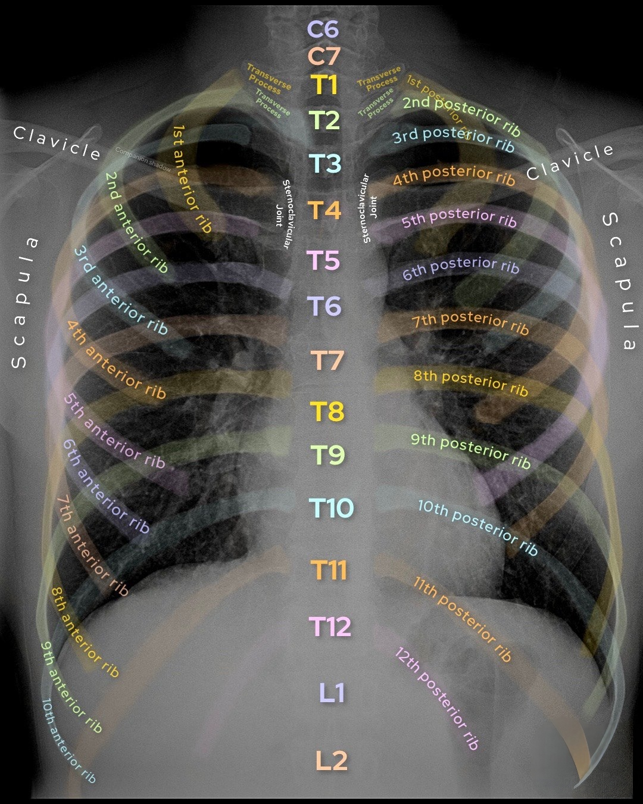
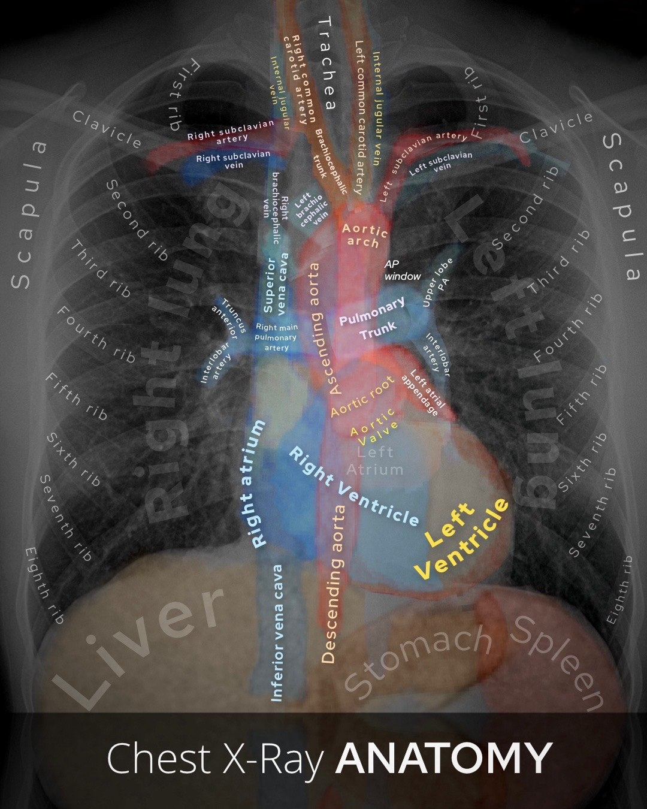
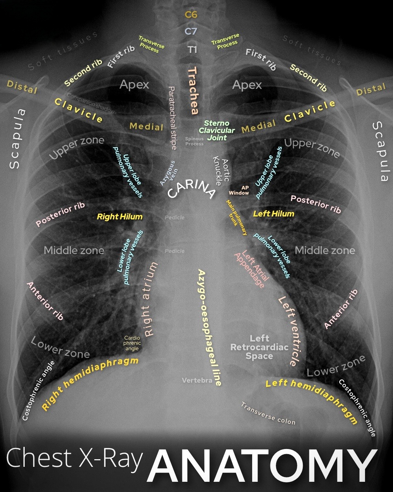

1. القفص الصدري (Thoracic Cage)
عظمة القص (Sternum): تقع بالمنتصف وتتكون من القبضة والجسم والناتئ الخنجري.
الأضلاع (12 زوجاً): تقسم إلى أضلاع حقيقية (1-7)، أضلاع كاذبة (8-10)، وأضلاع عائمة (11-12).
2. العمود الفقري المرتبط بالصدر
الفقرات العُنقية (C1-C7): 7 فقرات في الرقبة تدعم الرأس.
الفقرات الصدرية (T1-T12): 12 فقرة تتصل بالأضلاع وتشكل الدعم الخلفي للصدر.
الفقرات القُطنية (L1-L5): 5 فقرات في أسفل الظهر تتميز بكبر حجمها.
3. الرئتان والقلب (Lungs & Heart)
الرئتان: اليمنى تتكون من 3 فصوص واليسرى من فصين لتفسح المجال للقلب، وتظهر باللون الأسود في أشعة (`CXR`).
القلب: يقع في المنصف الأوسط محاطاً بالتامور ويضخ الدم لكل الجسم.
4. المنصف (Mediastinum)
الحيز الواقع بين الرئتين، ويقسم إلى منصف علوي ومنصف سفلي (أمامي، متوسط يحتوي القلب، وخلفي).
📷 صور تشريحية لمنطقة الصدر والقلب والفقرات
1. أشعة القفص الصدري (Thoracic Cage):

2. تشريح القلب والمنصف (Heart & Mediastinum):

3. أشعة العمود الفقري الصدري والقطني (Spine):
